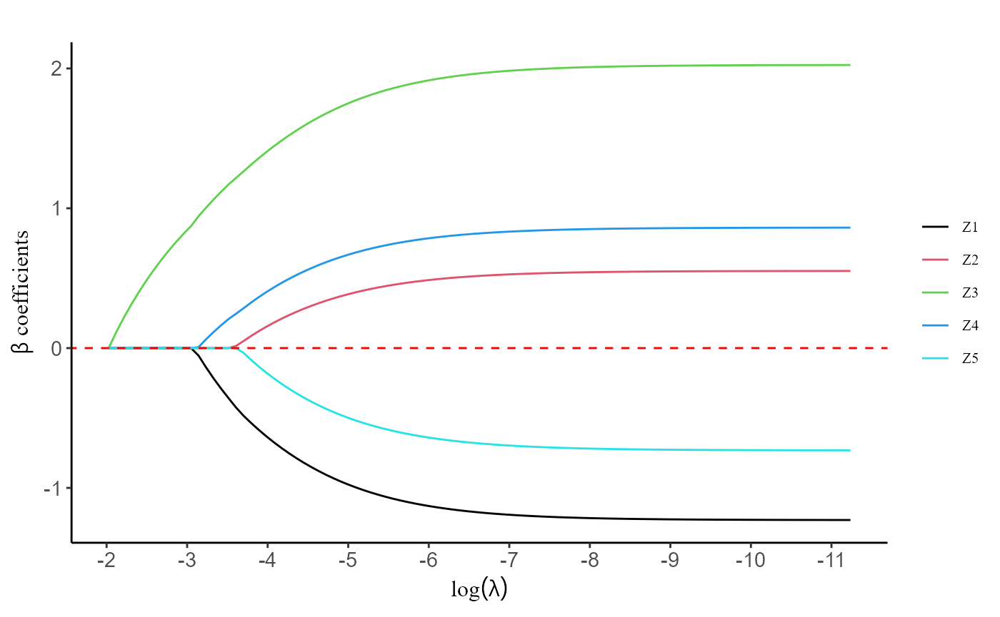
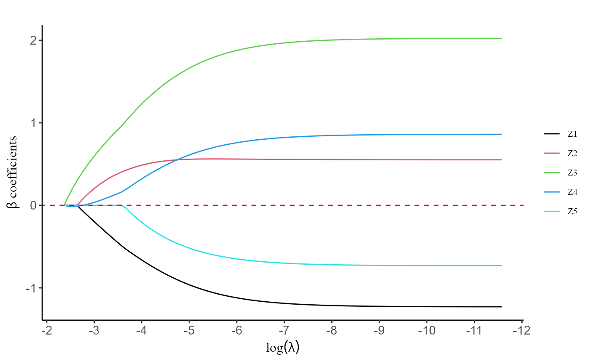
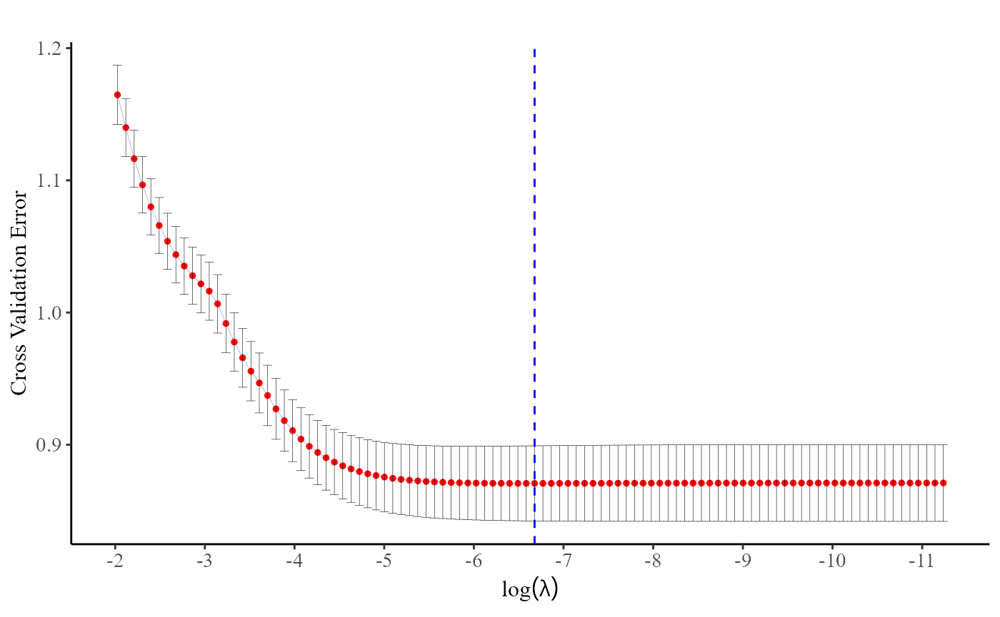
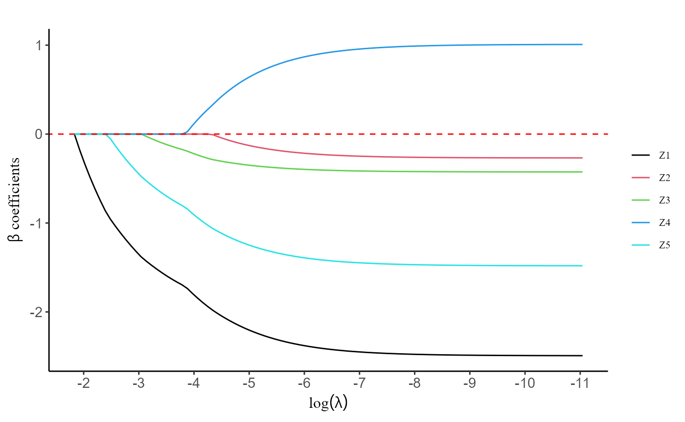
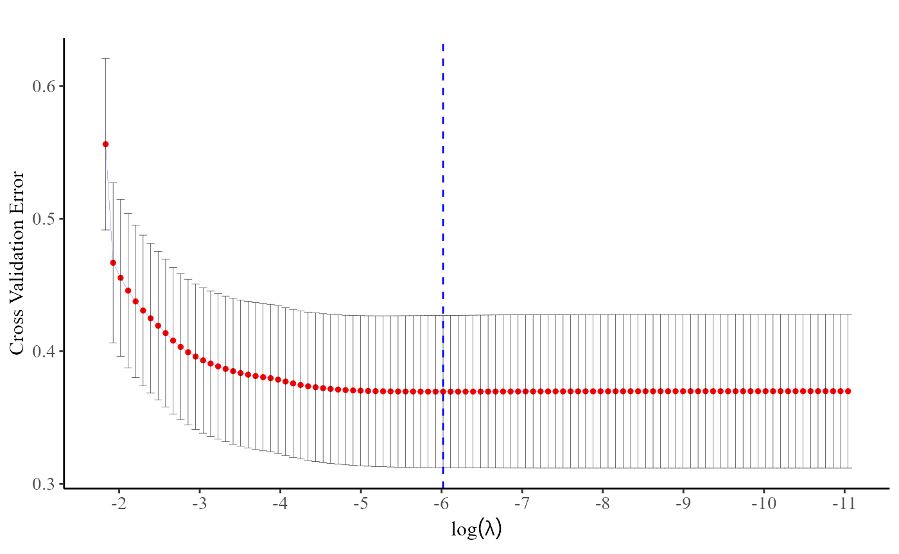
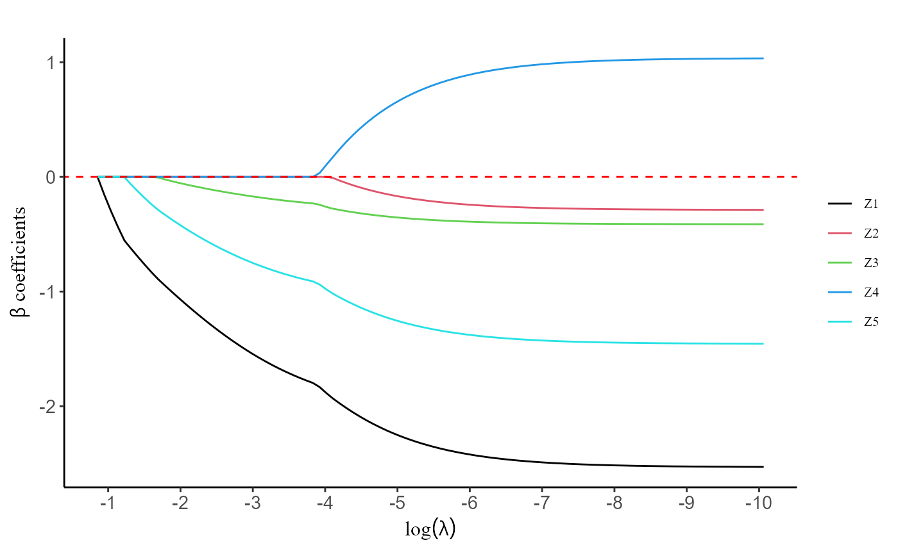
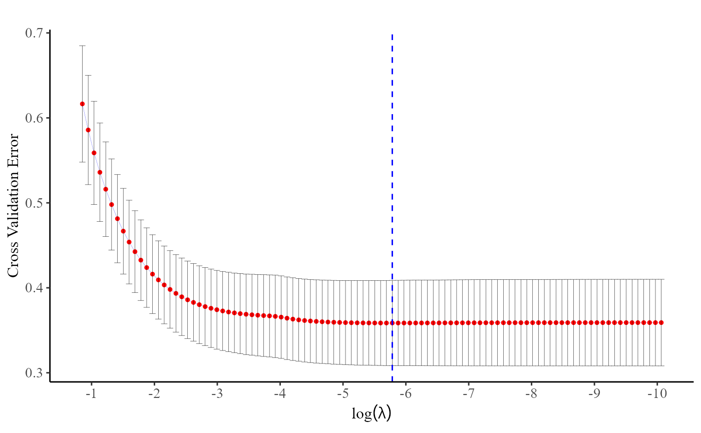
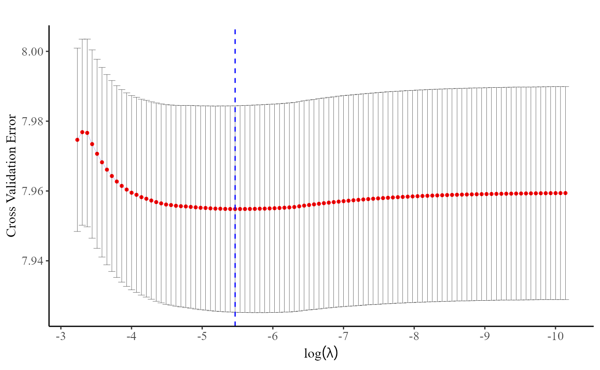

Introduction:
grplasso is a specialized R package designed for fitting
penalized regression models in settings involving high-dimensional
grouped (or clustered) effects. Unlike traditional lasso approaches that
treat all covariates equally, grplasso distinguishes and efficiently
handles group structures to improve the computational performance.
This tutorial demonstrates how to apply grplasso in
practice using illustrative example datasets.
Installation:
require("devtools")
require("remotes")
remotes::install_github("UM-KevinHe/grplasso", ref = "main")Quick Start:
In this section, we will explore the fundamental usage of the functions integrated into the current R package, providing a detailed interpretation of the resulting values obtained from these functions. To enhance users’ understanding of the R package, we will employ example datasets, enabling a comprehensive grasp of its functionalities.
library(grplasso)
#> Error in get(paste0(generic, ".", class), envir = get_method_env()) :
#> object 'type_sum.accel' not found1. Generalized Linear Models (GLMs)
To exemplify the process of fitting a generalized linear model, we will utilize the “BinaryData” dataset included in the package. This dataset consists of five predictors, an indicator for provider information, and a binary outcome variable.
data(BinaryData)
data <- BinaryData$data
Y.char <- BinaryData$Y.char # variable name of outcome variable
prov.char <- BinaryData$prov.char # variable name of provider indicator
Z.char <- BinaryData$Z.char # variable names of predictors
head(data)
#> Y Prov.ID Z1 Z2 Z3 Z4 Z5
#> 1 1 10 -0.006 -0.159 0.588 0.378 -1.430
#> 2 0 11 0.862 -0.162 0.243 0.503 0.549
#> 3 0 11 0.453 0.961 0.665 0.522 0.859
#> 4 1 8 -0.286 0.001 0.903 0.886 -0.324
#> 5 0 13 0.564 -0.194 -0.062 -0.792 -0.783
#> 6 1 18 0.676 1.095 2.223 1.367 1.060Without grouped covariate
The pp.lasso() function is employed to fit a generalized
linear model when the covariate does not include any group information.
When the user does not specify the regularization coefficient
,
our function automatically generates a sequence of
values by default. The sequence starts with the largest
,
which penalizes all covariates to zero, and then gradually decreases
to allow for variable selection and modeling flexibility.
fit <- pp.lasso(data, Y.char, Z.char, prov.char)The coef() function serves to provide estimates of the
coefficients in the fitted model. The resulting coefficient matrix is
structured such that the column names correspond to the
values used in the modeling process.
coef(fit)$beta[, 1:5]
#> 0.132 0.1202 0.1096 0.0998 0.091
#> Z1 0 0.0000000 0.0000000 0.0000000 0.0000000
#> Z2 0 0.0000000 0.0000000 0.0000000 0.0000000
#> Z3 0 0.1120347 0.2148847 0.3098777 0.3980465
#> Z4 0 0.0000000 0.0000000 0.0000000 0.0000000
#> Z5 0 0.0000000 0.0000000 0.0000000 0.0000000
coef(fit)$gamma[1:5, 1:5]
#> 0.132 0.1202 0.1096 0.0998 0.091
#> 1 -0.2411977 -0.2939898 -0.3431091 -0.3889330 -0.4318211
#> 2 -1.9635362 -1.8742433 -1.7984115 -1.7336457 -1.6779754
#> 3 -1.2089403 -1.1883078 -1.1712888 -1.1572109 -1.1455229
#> 4 -1.9600386 -1.8922127 -1.8332183 -1.7815619 -1.7360041
#> 5 -0.5500569 -0.5698456 -0.5894538 -0.6087582 -0.6276779The plot() function is designed to generate a figure
depicting the regularization path. This path illustrates the behavior of
the coefficients for each predictor variable as the regularization
parameter
varies. By visualizing the regularization path, users can gain valuable
insights into the impact of different regularization strengths on the
coefficients, aiding in model interpretation and selection.
plot(fit, label = TRUE)
The predict() function is utilized to generate model
predictions for a given dataset based on the coefficient estimates
obtained from the fitted model. Once the model has been trained using
the pp.lasso() function and the coefficients have been
estimated, the predict function can be applied to new data to obtain
predictions for the outcome variable.
This function offers various types of outputs to suit different analysis needs. For instance, when fitting a penalized logistic regression model, using type = “response” provides the probabilities of “Y = 1” for each observation, while type = “class” provides the predicted class.
predict(fit, data, Z.char, prov.char, lambda = fit$lambda, type = "response")[1:5, 1:5]
#> 0.132 0.1202 0.1096 0.0998 0.091
#> [1,] 0.2874999 0.2996927 0.3106971 0.3206762 0.3297643
#> [2,] 0.2051302 0.2112109 0.2163924 0.2208163 0.2246015
#> [3,] 0.2051302 0.2191951 0.2321638 0.2441339 0.2551989
#> [4,] 0.3947391 0.4208778 0.4449423 0.4671087 0.4875485
#> [5,] 0.2345694 0.2340619 0.2330311 0.2316163 0.2299295
predict(fit, data, Z.char, prov.char, lambda = 0.001, type = "class")[1:5]
#> [1] 1 0 0 1 0With grouped covariate
The utilization of the grp.lasso() function is similar
to the previously mentioned methods, with the added requirement of
providing group information for the covariates. When calling the
function, users should provide the necessary group information to ensure
proper grouping of variables for regularization. However, if the user
does not explicitly provide the group information, the
grp.lasso() function will automatically assume that each
variable is treated as an individual group on its own. This default
behavior simplifies the process for users who do not wish to specify
explicit groups, ensuring that the function can still be applied
effectively without the need for additional input.
group <- BinaryData$group
fit2 <- grp.lasso(data, Y.char, Z.char, prov.char, group = group)
plot(fit2, label = T)
Please note that for both pp.lasso() and
grp.lasso() functions, the parameter “prov.char” is
optional. In the event that the user does not specify the provider
information for the observations, the program will automatically assume
that all observations originate from the same health provider, resulting
in the generation of one common intercept.
fit.no_prov <- pp.lasso(data, Y.char, Z.char)
#> Warning: Provider information not provided. All data is assumed to originate
#> from a single provider!
coef(fit.no_prov)$beta[, 1:5]
#> 0.2513 0.2289 0.2086 0.1901 0.1732
#> Z1 0 0.0000000 0.0000000 0.0000000 0.0000000
#> Z2 0 0.0000000 0.0000000 0.0000000 0.0000000
#> Z3 0 0.1006904 0.1935559 0.2800125 0.3610722
#> Z4 0 0.0000000 0.0000000 0.0000000 0.0000000
#> Z5 0 0.0000000 0.0000000 0.0000000 0.0000000
coef(fit.no_prov)$gamma[1:5] #"gamma" is treated as the common intercept
#> 0.2513 0.2289 0.2086 0.1901 0.1732
#> -0.5838804 -0.5896897 -0.5974013 -0.6065479 -0.6167685Regularization parameter selection for GLM problems
The optimal regularization parameter
()
is determined through cross-validation. To find the best
,
users can employ either the cv.pp.lasso() or
cv.grp.lasso() function, depending on the specific type of
model they are working with. These cross-validation functions inherit
the parameters required for the model fitting process, providing a
seamless and straightforward experience for users. By default, both
functions utilize 10-fold cross-validation.
fit <- cv.pp.lasso(data, Y.char, Z.char, prov.char, nfolds = 10)The plot() function, applied to a
cv.pp.lasso or cv.grp.lasso object, generates
a figure that enables users to assess how the cross-entropy loss changes
with varying values of
.
By observing the plot, users can easily identify the point at which the
cross-entropy loss is minimized.
plot(fit)
Indeed, users can directly use the fit$lambda.min command to obtain the optimal value of .
fit$lambda.min
#> [1] 0.0012595912. Discrete Survival Models
The pp.DiscSurv() function is utilized for fitting a
penalized discrete survival model. In contrast to the current R package,
this function does not necessitate data expansion based on discrete time
points, resulting in a significant reduction in memory usage and
convergence time required for operation.
The DiscTime dataset, included in this package,
comprises of 5 covariates, provider information, observation time, and
event indicator. We will be using this dataset as an example to
illustrate how to utilize it.
data(DiscTime)
data <- DiscTime$data
Event.char <- DiscTime$Event.char
Time.char <- DiscTime$Time.char
head(data)
#> Prov.ID Z1 Z2 Z3 Z4 Z5 time status
#> 1 4 -1.298 -1.471 -1.346 -1.775 -1.241 1.03 1
#> 2 5 0.192 0.163 0.953 1.083 0.371 12.50 0
#> 3 4 -2.315 -2.038 -1.629 -2.577 -2.008 0.53 1
#> 4 1 -0.198 1.231 0.633 0.739 0.214 6.74 1
#> 5 2 0.469 0.640 -0.583 0.161 0.927 12.50 0
#> 6 4 -1.445 -1.848 -3.024 -2.117 -1.894 0.53 1
fit <- pp.DiscSurv(data, Event.char, prov.char, Z.char, Time.char)The pp.DiscSurv() function yields three main sets of
coefficients as its primary output. These coefficients pertain to the
covariate estimates, log-transformed baseline hazard for various time
points, and provider effects. To avoid multicollinearity problems, we
designate the first provider as the reference group.
Similar to the GLM fitting functions mentioned earlier,
pp.DiscSurv() is also furnished with a coef()
function. This function facilitates the provision of coefficient
estimates within the fitted penalized discrete survival model across the
entire sequence of
values employed in the modeling procedure.
coef(fit)$beta[, 1:5]
#> 0.1601 0.1458 0.1329 0.1211 0.1103
#> Z1 0 -0.1735757 -0.3325774 -0.4793679 -0.6155647
#> Z2 0 0.0000000 0.0000000 0.0000000 0.0000000
#> Z3 0 0.0000000 0.0000000 0.0000000 0.0000000
#> Z4 0 0.0000000 0.0000000 0.0000000 0.0000000
#> Z5 0 0.0000000 0.0000000 0.0000000 0.0000000
coef(fit)$gamma[, 1:5]
#> 0.1601 0.1458 0.1329 0.1211 0.1103
#> 1 0.0000000 0.0000000 0.000000 0.0000000 0.0000000
#> 2 -4.5665147 -4.3516946 -4.162992 -3.9945779 -3.8425705
#> 3 -0.7478311 -0.7116142 -0.682481 -0.6580980 -0.6367834
#> 4 1.2412090 1.1456446 1.059286 0.9815198 0.9121089
#> 5 -2.3399410 -2.1966372 -2.070536 -1.9577270 -1.8555876
coef(fit)$alpha[, 1:5]
#> 0.1601 0.1458 0.1329 0.1211 0.1103
#> [Time: 0.53] -1.668065 -1.747753 -1.824209 -1.898663 -1.971909
#> [Time: 1.03] -1.480994 -1.526815 -1.571328 -1.615488 -1.659886
#> [Time: 3.92] -1.622145 -1.641556 -1.661848 -1.683563 -1.706991
#> [Time: 6.74] -1.251585 -1.257340 -1.264124 -1.272503 -1.282795
#> [Time: 12.5] -1.781635 -1.780095 -1.780526 -1.783340 -1.788771Users have the option to utilize the plot() function,
which generates a figure illustrating the regularization path. This
visual representation showcases the behavior of the coefficients for
each predictor variable as
varies.
plot(fit, label = T)
The predict() function is employed to generate model
predictions for a given dataset using the coefficient estimates obtained
from the fitted model. It is essential to note that the discrete time
points within the prediction data set must align with the discrete time
points used during model fitting. If they do not match, the baseline
hazard of mismatches cannot be estimated accurately.
predict(fit, data, Event.char, prov.char, Z.char, Time.char, lambda = fit$lambda, type = "response", which.lambda = fit$lambda[1])[1:5,]
#> Individual [Time: 0.53] [Time: 1.03] [Time: 3.92] [Time: 6.74] [Time: 12.5]
#> 1 1 0.1586823 0.1852773 NA NA NA
#> 2 2 0.1586823 0.1852773 0.1649092 0.2224258 0.1441013
#> 3 3 0.1586823 NA NA NA NA
#> 4 4 0.1586823 0.1852773 0.1649092 0.2224258 NA
#> 5 5 0.1586823 0.1852773 0.1649092 0.2224258 0.1441013Regularization parameter selection for discrete survival models
The optimal regularization parameter
()
is determined through cross-validation, utilizing the cross-validation
error as the guiding metric. Users can identify the best
value by employing the cv.pp.DiscSurv() function.
fit <- cv.pp.DiscSurv(data, Event.char, prov.char, Z.char, Time.char, nfolds = 10, trace.cv = T)
#> Starting CV fold #1...
#> Starting CV fold #2...
#> Starting CV fold #3...
#> Starting CV fold #4...
#> Starting CV fold #5...
#> Starting CV fold #6...
#> Starting CV fold #7...
#> Starting CV fold #8...
#> Starting CV fold #9...
#> Starting CV fold #10...Users can either utilize the plot() function or directly
access the fit$lambda.min command to identify the optimal value
of
at which the cross-entropy loss is minimized.
plot(fit)
fit$lambda.min
#> [1] 0.00243264Discrete survival model with no grouped (or clusted) information provided
Similar with our GLM-related functions, we present a solution for fitting a discrete survival model without requiring provider information. This approach tackles the issue commonly encountered with existing statistical tools used to fit discrete survival models, which often necessitate data expansion, leading to significantly slow convergence.
For ease of use, we have introduced a new function called
DiscSurv(), designed to facilitate a similar user
experience to pp.DiscSurv(). However, the key difference
lies in the fact that DiscSurv() no longer demands provider
information from the user, meaning that all observations are now treated
as originating from the same healthcare provider.
Additionally, we have provided the cv.DiscSurv()
function to aid users in selecting optimal
.
Moreover, the coef(), predict(), and
plot() functions have also been thoughtfully
incorporated.
fit <- DiscSurv(data, Event.char, Z.char, Time.char) # no provider information required
coef(fit, lambda = fit$lambda)$alpha[, 1:10] #time effect
#> 0.4261 0.3882 0.3537 0.3223 0.2937 0.2676
#> [Time: 0.53] -1.979501 -1.970055 -1.977003 -1.996580 -2.025956 -2.063289
#> [Time: 1.03] -2.110213 -2.069229 -2.043936 -2.030857 -2.027098 -2.024884
#> [Time: 3.92] -2.484907 -2.418504 -2.367851 -2.329504 -2.300539 -2.271883
#> [Time: 6.74] -2.355695 -2.272311 -2.204520 -2.148985 -2.102832 -2.057118
#> [Time: 12.5] -2.958691 -2.863140 -2.784495 -2.719193 -2.664086 -2.607955
#> 0.2438 0.2221 0.2024 0.1844
#> [Time: 0.53] -2.108335 -2.159552 -2.215497 -2.275267
#> [Time: 1.03] -2.029997 -2.041139 -2.057146 -2.077164
#> [Time: 3.92] -2.250817 -2.236107 -2.226728 -2.221906
#> [Time: 6.74] -2.019042 -1.987381 -1.961174 -1.939721
#> [Time: 12.5] -2.560084 -2.519189 -2.484282 -2.454649
coef(fit, lambda = fit$lambda)$beta[, 1:10] #covariate coefficient
#> 0.4261 0.3882 0.3537 0.3223 0.2937 0.2676 0.2438
#> Z1 0 -0.1556065 -0.2988513 -0.4321738 -0.555131105 -0.62728969 -0.6971121
#> Z2 0 0.0000000 0.0000000 0.0000000 0.000000000 0.00000000 0.0000000
#> Z3 0 0.0000000 0.0000000 0.0000000 0.000000000 0.00000000 0.0000000
#> Z4 0 0.0000000 0.0000000 0.0000000 0.000000000 0.00000000 0.0000000
#> Z5 0 0.0000000 0.0000000 0.0000000 -0.003068977 -0.06697318 -0.1271421
#> 0.2221 0.2024 0.1844
#> Z1 -0.7648862 -0.8306053 -0.891723581
#> Z2 0.0000000 0.0000000 0.000000000
#> Z3 0.0000000 0.0000000 -0.005878473
#> Z4 0.0000000 0.0000000 0.000000000
#> Z5 -0.1840291 -0.2383354 -0.287531205
plot(fit, label = T)
cv.fit <- cv.DiscSurv(data, Event.char, Z.char, Time.char, nfolds = 10, trace.cv = T)
#> Starting CV fold #1...
#> Starting CV fold #2...
#> Starting CV fold #3...
#> Starting CV fold #4...
#> Starting CV fold #5...
#> Starting CV fold #6...
#> Starting CV fold #7...
#> Starting CV fold #8...
#> Starting CV fold #9...
#> Starting CV fold #10...
plot(cv.fit)
predict(fit, data, Event.char, Z.char, Time.char, lambda = fit$lambda, type = "response", which.lambda = cv.fit$lambda.min)[1:5,]
#> Individual [Time: 0.53] [Time: 1.03] [Time: 3.92] [Time: 6.74] [Time: 12.5]
#> 1 1 0.491864462 0.74764296 NA NA NA
#> 2 2 0.009860994 0.02957994 0.041247655 0.07816691 0.05422556
#> 3 3 0.952556420 NA NA NA NA
#> 4 4 0.020209741 0.05938188 0.081813820 0.14938494 NA
#> 5 5 0.001765611 0.00538432 0.007582723 0.01483601 0.010079863. Stratified Cox Models
Our R package offers the Strat.cox() and
cv.strat_cox() functions designed for fitting penalized
stratified Cox models. In the context of our intended scenario, each
healthcare provider is considered a distinct stratum. The functionality
of both Strat.cox() and cv.strat_cox() extends
to the incorporation of group information among variables, achieved by
configuring the “group” parameter.
We employ the ContTime simulation dataset, which is
included within this package, to illustrate the utilization of these two
functions. This dataset encompasses five covariates, a provider
indicator (which serves as stratum information), as well as follow-up
time and event indicators.
data(ContTime)
data <- ContTime$data
head(data)
#> Prov.ID Z1 Z2 Z3 Z4 Z5 status time
#> [1,] 11 3.431888 4.397010 3.800101 4.809899 4.049038 1 0.4984520
#> [2,] 4 2.789097 2.616714 3.401736 3.510431 3.650074 0 3.0000000
#> [3,] 9 5.451523 4.009896 5.473275 4.772835 4.708293 1 0.5987062
#> [4,] 15 2.421634 2.284766 1.747758 2.182607 1.072065 1 0.6406964
#> [5,] 9 5.827436 5.238138 5.536604 5.265083 4.735679 0 3.0000000
#> [6,] 18 2.140707 1.773304 1.792366 1.774502 3.209669 0 3.0000000Users can utilize the coef() function to obtain
coefficient estimates for the covariates across the complete sequence of
values.
coef(fit)[, 1:5]
#> 0.0394 0.0368 0.0343 0.032 0.0298
#> Z1 0 -0.01983922 -0.0390155 -0.05686517 -0.07358008
#> Z2 0 0.00000000 0.0000000 0.00000000 0.00000000
#> Z3 0 0.00000000 0.0000000 0.00000000 0.00000000
#> Z4 0 0.00000000 0.0000000 0.00000000 0.00000000
#> Z5 0 0.00000000 0.0000000 0.00000000 0.00000000The plot() function facilitates users in visualizing the
regularization path.
plot(fit, label = T)
It’s important to highlight that the prov.char parameter
here is also discretionary. In the absence of user input, the program
will automatically assign all observations to a single stratum by
default. Consequently, the conventional Cox model will be employed for
fitting.
fit.no_stratum <- Strat.cox(data, Event.char, Z.char, Time.char)
#> Warning: Provider information not provided. All data is assumed to originate
#> from a single provider!
coef(fit.no_stratum)[, 1:5]
#> 0.1745 0.1627 0.1517 0.1415 0.132
#> Z1 0 0.0000000 0.000000000 0.00000000 0.0000000000
#> Z2 0 0.0000000 0.000000000 0.00000000 0.0005808148
#> Z3 0 0.0155369 0.025755673 0.03313948 0.0398429622
#> Z4 0 0.0000000 0.004892787 0.01173321 0.0177767495
#> Z5 0 0.0000000 0.000000000 0.00000000 0.0000000000Likewise, the cv.strat_cox() function can be employed
for cross-validation, and the plot() function can be
utilized to visualize cross-validation error.
cv.fit <- cv.strat_cox(data, Event.char, Z.char, Time.char, prov.char, group = c(1, 2, 2, 3, 3), nfolds = 10, se = "quick")
cv.fit$lambda.min
#> [1] 0.004228925
plot(cv.fit)